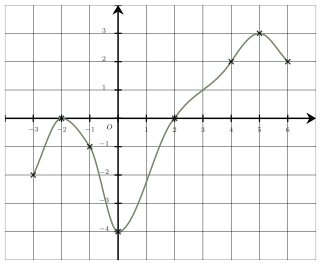

Semaine 15
Fonctions, variations et statistiques
QCM à réponse unique — choisis une proposition pour révéler la correction immédiatement.
Même QCM, sans correction — ton score apparaît une fois toutes les questions complétées.
 Une seule affirmation est correcte :
Une seule affirmation est correcte :
$\bullet$ Le minimum de $f$ est $-4$.
Cette affirmation est correcte :
Le point le plus bas de la courbe a pour ordonnée $-4$. C’est le minimum de $f$.
$\bullet$ $f(1{,}2) \times f(1{,}6) < 0$
Cette affirmation est fausse :
$f(1{,}2) < 0$ et $f(1{,}6) < 0$, donc le produit est positif.
$\bullet$ L’équation $f(x)=0$ admet une unique solution.
Cette affirmation est fausse :
L’équation $f(x)=0$ admet deux solutions car la courbe coupe deux fois l’axe des abscisses pour des valeurs opposées en $-2$ et $2$.
$\bullet$ L’inéquation $f(x) \leqslant 0$ a pour ensemble de solutions $[-3\ ;\ -2[\cup]-2\ ;\ 2]$.
Cette affirmation est fausse :
Les solutions de l’inéquation $f(x) \leqslant 0$ sont les abscisses des points de la courbe situés en dessous ou sur l’axe des abscissses.
La bonne réponse est la réponse D.
Voici trois nombres.
$$A = 0,375 \ \ \ \ \ \ \ \ B = \dfrac{38}{100} \ \ \ \ \ \ \ \ C = \dfrac{7}{20}$$Le classement par ordre croissant de ces trois nombres est :
Pour comparer ces trois nombres, on les écrit sous forme décimale :
$A = 0,375$
$B = \dfrac{38}{100} = 0,38$
$C = \dfrac{7}{20} = \dfrac{7 \times 5}{20\times 5} = \dfrac{35}{100}=0,35$
On a donc : $0,35 < 0,375 < 0,38$. Finalement : $\boldsymbol{C < A < B}$. La bonne réponse est la réponse D.
Tout nombre multiplié par $1$ est égal à lui-même.
$a \times 1 = \boldsymbol{a}$ La bonne réponse est la réponse D.
$(x+7)(x-2)$ est un produit de deux fonctions affines.
L’équation $x+7=0$ a pour solution $x=-7$.
L’équation $x-2=0$ a pour solution $x=2$.
Le tableau de signe du produit $-3(x+7)(x-2)$ est :
On en déduit que l’ensemble des solutions est $\boldsymbol{]-7\ ;\ 2[}.$ La bonne réponse est la réponse A.
$h(-3)+h(1)$ est égal à :
On a : $h(-3)=-6\times (-3)+3=21$ et $h(1)=-6\times 1+3=-3$.
On en déduit que $h(-3)+h(1)=21-3=\boldsymbol{18}$.
La bonne réponse est la réponse B.
Le premier quartile de la série est :
La série triée par ordre croissant est : $5$ ; $6$ ; $8$ ; $14$ ; $15$ ; $16$ ; $17$ ; $20$ ; $23$.
La série contient $9$ valeurs.
Pour trouver le rang de $Q_1$, on calcule le quart de 9 qui vaut
$\dfrac{9}{4}=2{,}25$
On arrondit à l’entier supérieur qui vaut $3$.
Le premier quartile est donc la valeur de rang $3$ de la série classée : $Q_1=8$.
La bonne réponse est la réponse C.

Une seule affirmation est correcte :Voici trois nombres.
$$A = \dfrac{6}{10} \ \ \ \ \ \ \ \ B = \dfrac{31}{50} \ \ \ \ \ \ \ \ C = 0,59$$Le classement par ordre croissant de ces trois nombres est :
$k(0)+k(3)$ est égal à :
Le premier quartile de la série est :